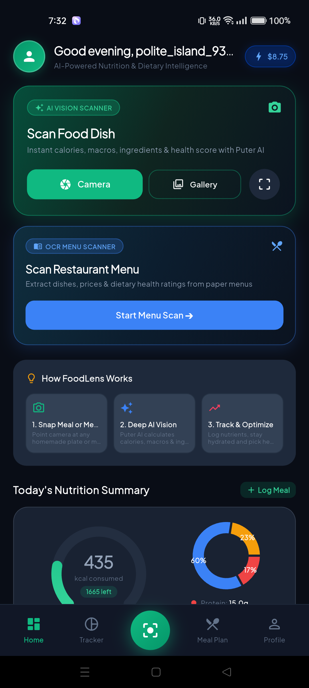
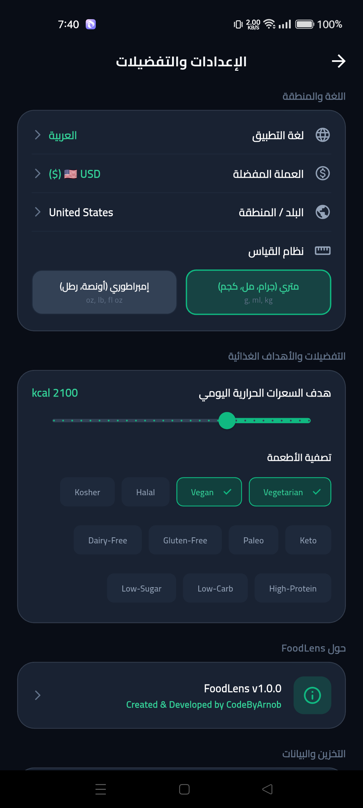

FoodLens
Transform your daily nutrition with real-time food recognition, clinical macronutrient estimation, packaged food label OCR, and decentralized client-side computing.
Captured directly from our Realme 8 test device running Android 13 without mockups or emulated visuals.

FoodLens combines advanced machine vision algorithms with intuitive health tools to help you understand every meal.
Instantly detects meals from camera capture or gallery selection, identifying complex multi-ingredient dishes, culinary preparation styles, and estimated serving sizes.
Scans Nutrition Facts panels on groceries and packaged foods, parsing calories, sodium levels, and hidden sugar additives with high accuracy.
Extracts dishes from dining menus, computes estimated calorie ranges, and highlights items matching your specific dietary targets.
Interactive circular charts track daily caloric intake against custom limits, visualizing protein, carbohydrates, and healthy fats.
Generates balanced breakfast, lunch, dinner, and snack suggestions tailored to your calorie targets, dietary filters, and taste preferences.
Full support for 7 international languages, native Right-to-Left (RTL) Arabic layout, and dynamic live currency conversion.
Select a culinary dish below to view the automated nutrition decomposition and adjust serving sizes dynamically.


Real application screenshots captured directly from our Realme 8 test device running Android 13. Click any image to view in full resolution.

Daily calories, macro dials, water tracking, and quick camera entry.

Real-time camera viewfinder, photo picker, and scan mode selection.

Detailed nutritional decomposition, macro charts, and detected tags.

Custom daily targets and AI-suggested balanced recipes.

Puter authentication state, quota monitor, and regional preferences.

Full Bengali language support with authentic Hind Siliguri typography.

Complete Right-to-Left bidirectional layout with Cairo typography.

Right-aligned controls, Arabic numerals, and regional preferences.
How decentralized open-source computing provides a superior experience without subscriptions or privacy compromises.
| Feature or Attribute | FoodLens (Open Source) | Commercial Nutrition Apps |
|---|---|---|
| Monthly Cost | 100% Free ($10/month free Puter tier) | $9.99 to $19.99 per month |
| User Data Privacy | 100% On-Device Local Sandbox | Centralized cloud databases & tracking |
| Advertising & Telemetry | Zero Ads, Zero Trackers, Zero Telemetry | Advertising SDKs & behavioral profiling |
| AI Vision & Label OCR | Multimodal AI included natively | Locked behind premium paywalls |
| Regional Currency Conversion | Live conversion (BDT, EUR, GBP, SAR, etc.) | Single currency or missing |
| Bidirectional RTL Layout | Native Arabic RTL & Cairo fonts | Often broken or unsupported |
| Source Code Transparency | 100% MIT Open Source on GitHub | Proprietary closed source |
Traditional AI apps force developers to pay massive cloud API bills or charge expensive recurring subscriptions. FoodLens solves this through a decentralized User-Pays architecture.
Engineered for accessibility across cultures, scripts, and regional economies.
Select a sample meal price preset or select a target regional currency:
| Language | Native Name | Layout Direction | Typography Engine |
|---|---|---|---|
| English | English | Left-to-Right (LTR) | Material Inter |
| Bengali | বাংলা | Left-to-Right (LTR) | GoogleFonts.hindSiliguri |
| Arabic | العربية | Right-to-Left (RTL) | GoogleFonts.cairo |
| Spanish | Español | Left-to-Right (LTR) | Material Inter |
| French | Français | Left-to-Right (LTR) | Material Inter |
| German | Deutsch | Left-to-Right (LTR) | Material Inter |
| Japanese | 日本語 | Left-to-Right (LTR) | Noto Sans JP |
| Hindi | हिन्दी | Left-to-Right (LTR) | Noto Sans Devanagari |
We are actively inviting international Flutter, Android, and web integration developers to solve our top priority technical challenge: opening Puter Login and Sign Up directly within the user default external Android browser (Chrome, Firefox, or preferred browser) instead of an embedded WebView, and returning securely to FoodLens with session recognized.